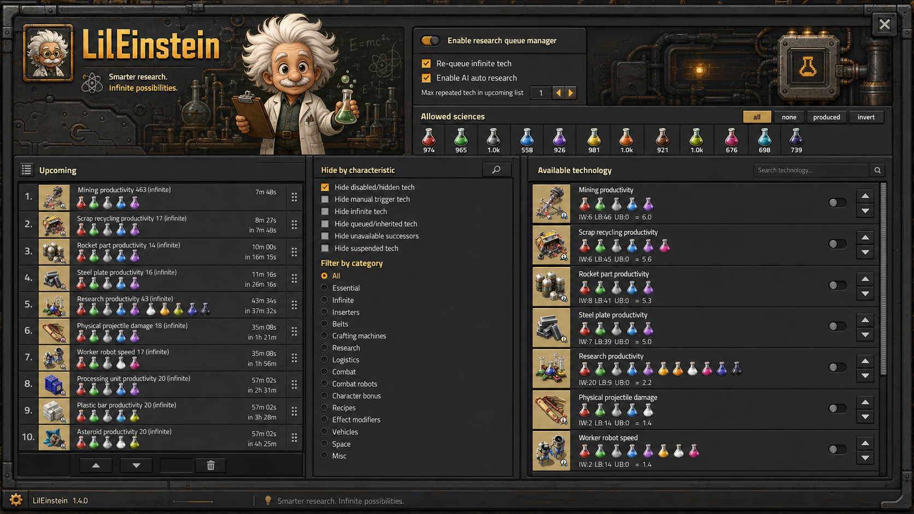

LilEinstein is a science-aware research autopilot for Factorio. Strategy profiles, supply forecasting, lab-cluster scheduling, queue budgets, repeat policies, plan presets, and multiplayer controls — all in one control center.
From cheapest-first progression to parallel time-sliced research, LilEinstein handles the entire research lifecycle so you can focus on building.
Nine built-in profiles: balanced, cheapest-first, unlock recipes, logistics, combat, space, spoilable science, productivity, and focused targets only.
Per-science priorities, availability hysteresis, production and consumption forecasts, and projected starvation switching before your labs run dry.
Surface- and logistic-network-aware lab supply clusters. Each lab prototype's accepted science packs are inspected so the right packs reach the right labs.
Queue-wide science budgets, deficit tracking, completion estimates, and limiting-science identification so you always know what's holding you back.
Per-technology infinite research rules: global, never, once, continuous, or to a selected level. Fine-tune how far each infinite tech should climb.
Save named plan presets and share them with compact import/export strings. Perfect for community guides and multiplayer coordination.
Native time-sliced parallel progress. When the dedicated Parallel Research mod is installed, LilEinstein supplies and orders its queue while that mod owns lab distribution.
Manual trigger objectives, administrator locking, and a shared change history keep everyone on the same page in cooperative campaigns.
A dedicated performance mode for large overhaul technology trees. Reduces policy scan frequency so massive modpacks stay smooth.
Switch profiles on the fly to match your current priorities — from early-game cheapest-first to late-game space progression.
A unified interface for strategy, science policies, budgets, presets, and multiplayer controls — all accessible from a single shortcut.

Pause automation, enable parallel research, require lab clusters, or activate performance mode.
Right-click a science icon to cycle priority between avoid, normal, preferred, and urgent.
Track trigger technologies that need a manual action — craft, mine, build, capture, or launch.
Export your entire research plan to a compact string and import it in another save or share with friends.
LilEinstein targets Factorio 2.0.77 and later 2.0 releases. Download from the in-game mod portal or grab the latest release.
Open Factorio → Mods → Install → search LilEinstein → Install. Enable and restart.
Download the zip, place it in your mods folder, enable it in the mod manager, and restart Factorio.
Use the shortcut button or the Open LilEinstein hotkey to launch the research control center.
Conflicts with some-autoresearch, UltimateResearchQueue2, and
paralell-lab. Optionally integrates with simultaneous-research and
Ultracube. A separate Factorio 2.1 package will be released after validation.